West Grand Neighborhood Organization
Neighborhood association serving Grand Rapids' West Grand area
Learn more and support →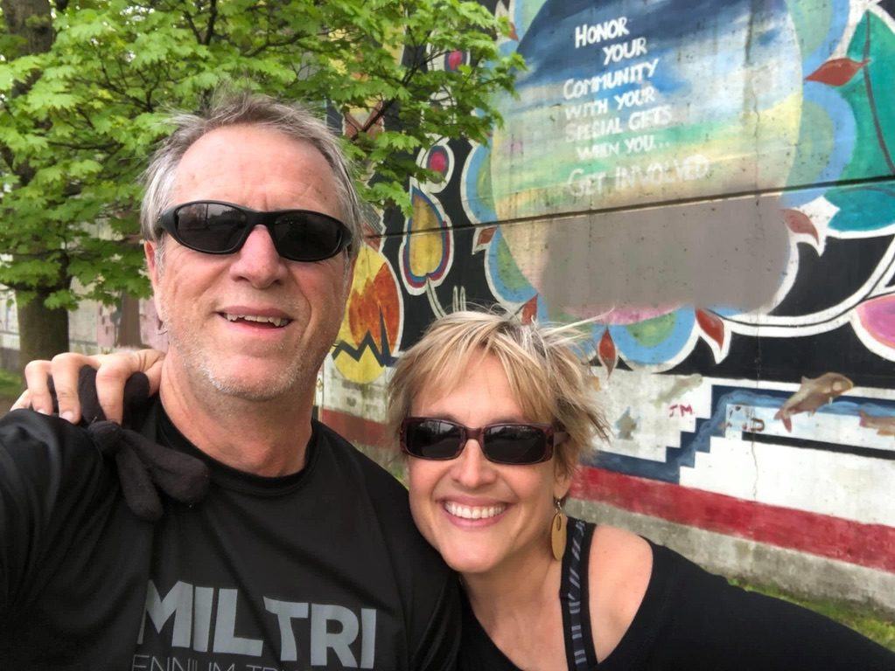
Union Square Condominium Association: board member eight years, president four
Grand Rapids Planning Commission, commissioner · West Grand Neighborhood Organization, board · Union Square Condominium Association, social committee lead ten years
West Side Community Clean Up, founders in 2009 · ArtPrize artist hosts, 2011 through 2014
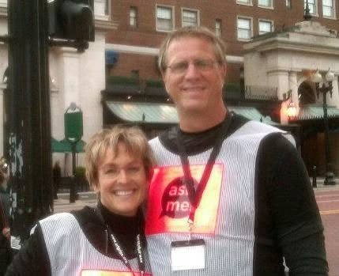
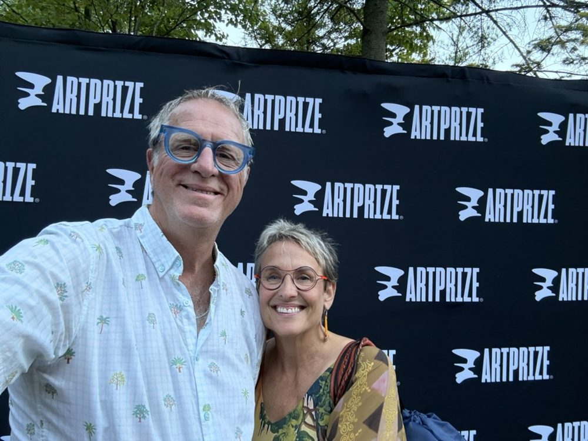
we shared a percentage of our profits with local nonprofits, from 2014 to 2026. Among the first were Well House, Steepletown Neighborhood Services and the HQ drop-in center for unhoused youth (now AYA Youth Collective).
In 2009, while we were dating, on our way to Sunday Funday at O’Toole’s, we decided to pick up trash on our block around Union Square and invited friends to join us. The first Clean Up had 15 volunteers; today it draws over 1,000, carried on by the West Grand Neighborhood Organization and now also called the City Wide Clean Up. All proceeds from our estate sale go to support it, to fund a community service project next spring that brings the neighborhood's next generation together. Watch for the invitation; we'll be back for it.
Give to the Clean Up Learn more and volunteer
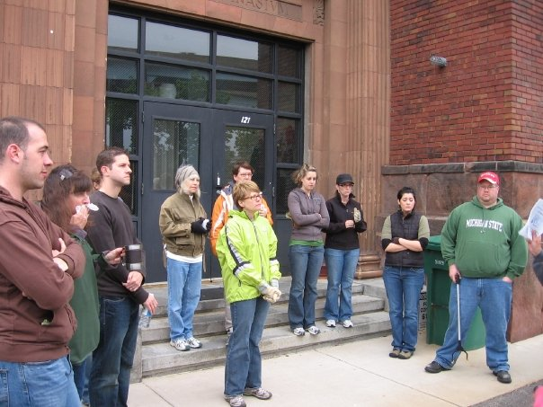
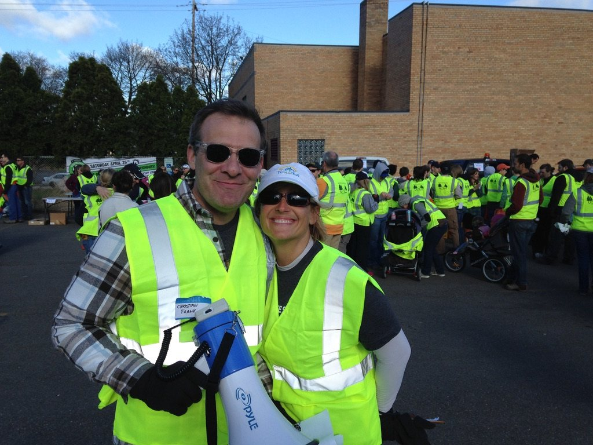
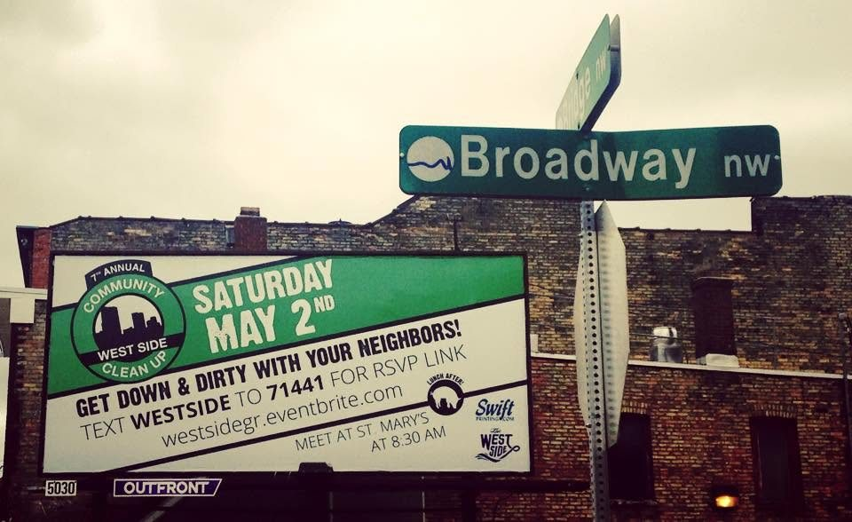
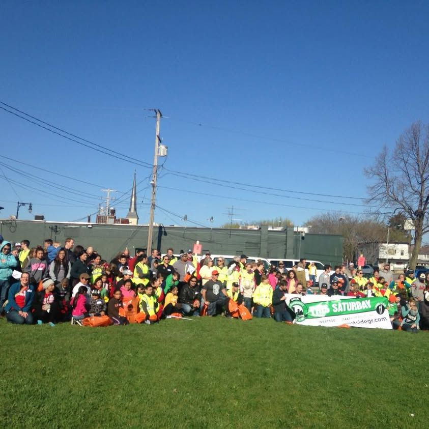
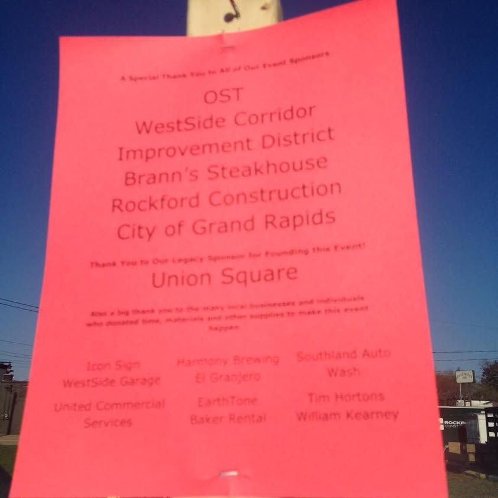
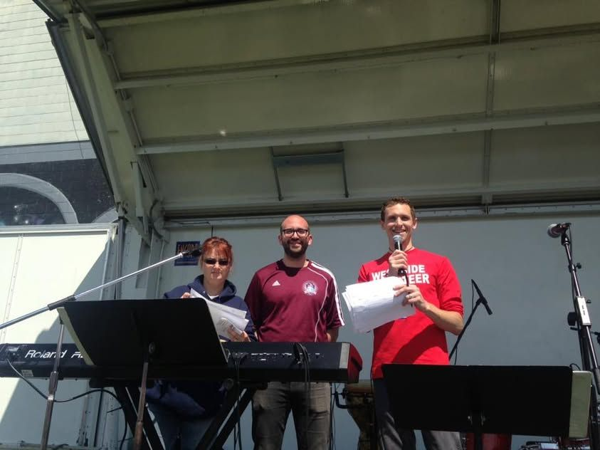
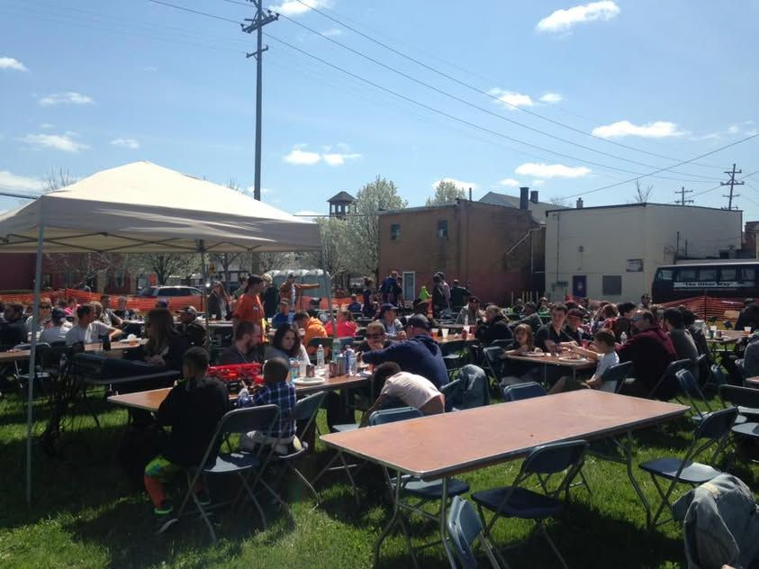
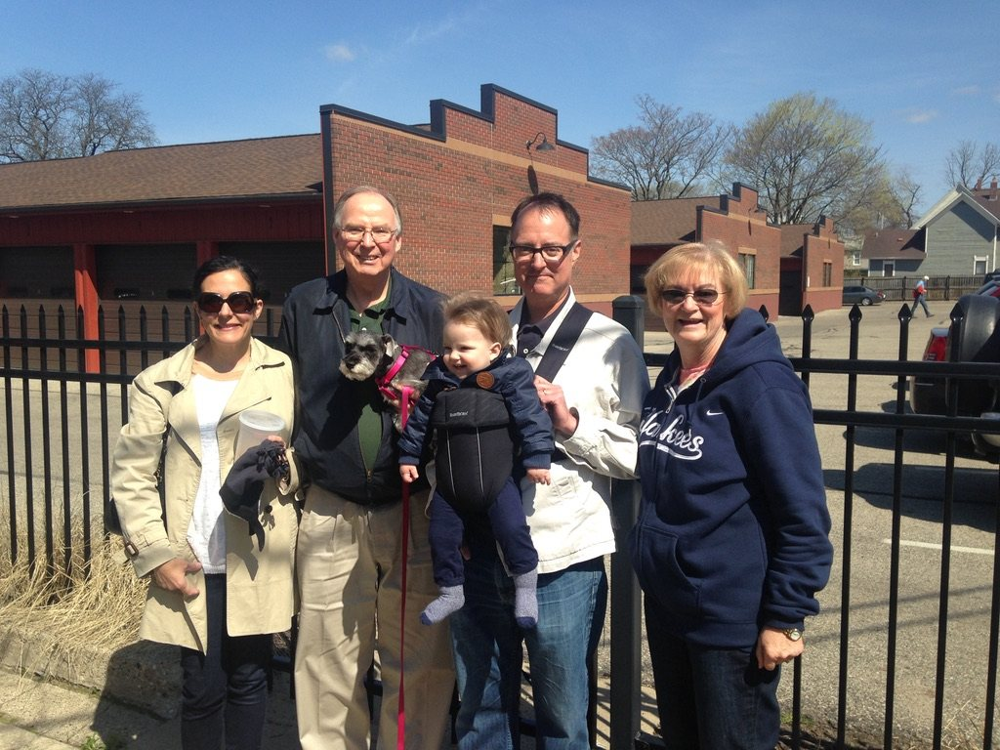
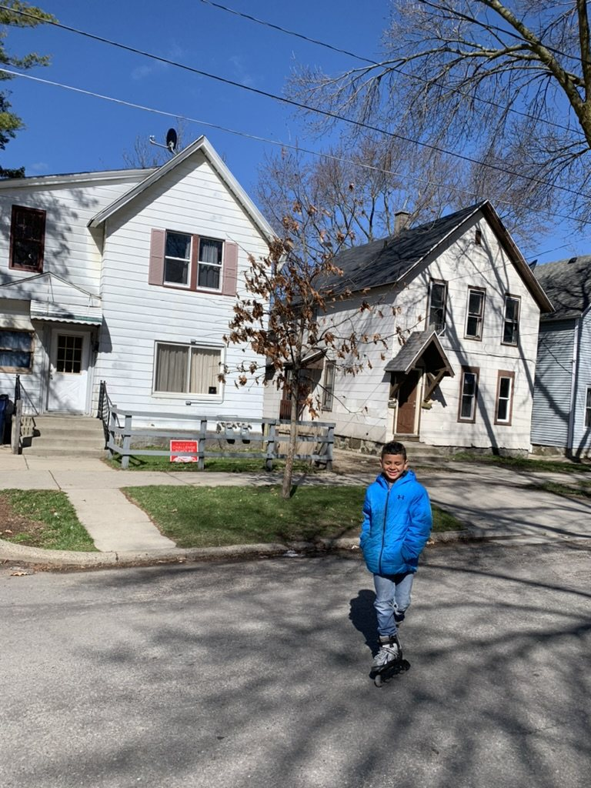
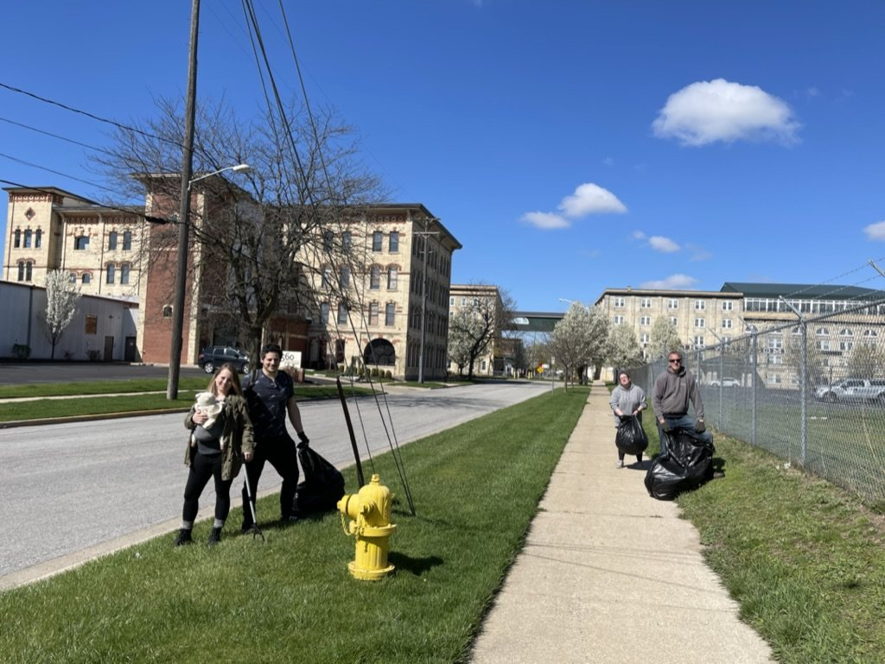
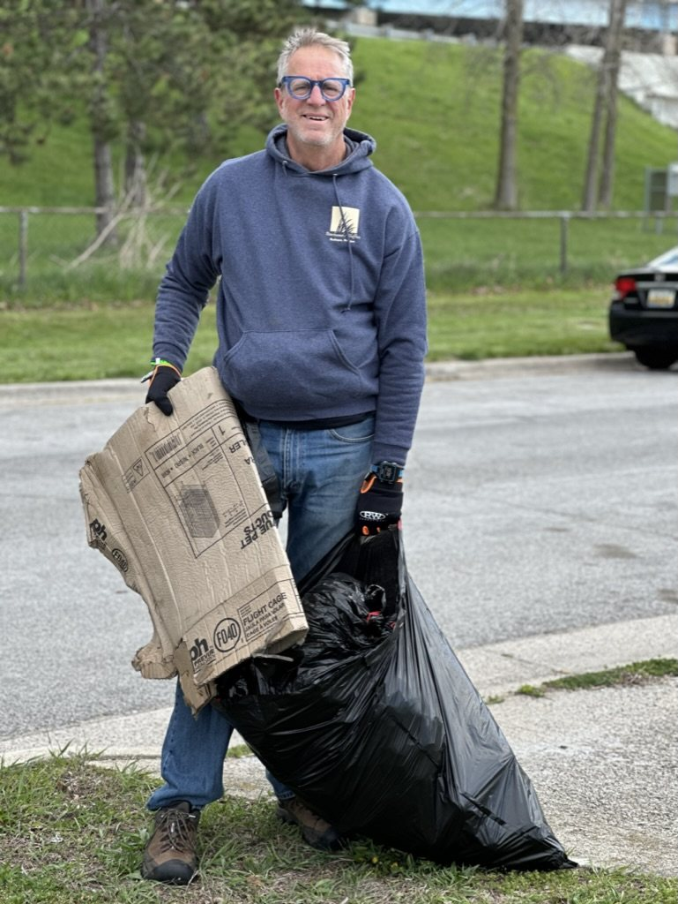
Giving back was built into how we hosted. A share of every stay, donated nights and our own volunteer hours went to organizations doing vital work in our community, and we supported local businesses along the way (that shout‑out list is coming next). Over 17 years, that adds up to 78 organizations, so far.
Please consider supporting them too.
Tap a circle to see who is in it.
Or browse the full list. Tap a group to see them.
Neighborhood association serving Grand Rapids' West Grand area
Learn more and support →Neighbors organizing for a safe, welcoming and thriving Roosevelt Park
Learn more and support →Education, advocacy and services with and for West Michigan's Hispanic and Latino community
Learn more and support →Advancing economic opportunity, equity and civil rights for Black families and the whole community
Learn more and support →Neighbors working together for a strong, connected Boston Square
Learn more and support →Neighbors building community, health and hope in southeast Grand Rapids
Learn more and support →West side neighborhood services: youth job training, mentoring and support for older neighbors
Learn more and support →West side ministry supporting addiction recovery and community connection
Learn more and support →West side community development: youth programs, family support, housing help
Learn more and support →Neighborhood development and opportunity in Boston Square and Madison Square
Learn more and support →Connects congregations and neighbors to end hunger and poverty in Kent County
Learn more and support →A food pantry in northwest Grand Rapids where neighbors choose their own groceries
Learn more and support →Provides nourishing evening meals to West Michigan kids
Learn more and support →A safe place for children who have experienced abuse to be heard, heal and find support
Learn more and support →Running-based confidence and life skills program for girls
Learn more and support →Builds courage, confidence, and character in girls across Michigan
Learn more and support →After-school music, arts and leadership programs for youth
Learn more and support →Community school coordinators connecting students and families to services
Learn more and support →Helps every Kent County child enter kindergarten healthy and ready to succeed
Learn more and support →Flight scholarships and aircraft for a free public aviation high school at the Ford Airport
Learn more and support →Child care quality, youth programs, and provider training across Michigan
Learn more and support →City partnership offering Grand Rapids youth jobs, programs, and leadership
Learn more and support →Raises funds to support GRPS students, teachers and programs
Learn more and support →Youth programs, wellness and community support across Greater Grand Rapids
Learn more and support →After-school and summer youth development clubs
Learn more and support →Drop-in center and housing support for youth facing instability
Learn more and support →Mentoring and leadership programs for girls in Grand Rapids
Learn more and support →Adult literacy, English language and workplace literacy programs
Learn more and support →Hands-on play and learning for young children and families downtown
Learn more and support →Young adults earning their diplomas and skilled-trades credentials while building homes in the neighborhood
Learn more and support →Where Erica taught leadership for a decade; gifts support students and scholarships
Learn more and support →The Ferris Foundation, supporting students and programs, including in Grand Rapids
Learn more and support →Caring adults building friendships with teens across Grand Rapids, including in the heart of the city
Learn more and support →Training, coaching and loans that help women and entrepreneurs build businesses
Learn more and support →Job training, placement and support that change lives through the power of work
Learn more and support →A partnership of employers that walks alongside employees when life gets hard, so they can keep working and thriving
Learn more and support →Lakeshore summer camp and year-round programs for kids from under-resourced neighborhoods
Learn more and support →Nature preserve with environmental education, trails and wildlife programs
Learn more and support →Environmental education and advocacy for clean water and climate action
Learn more and support →Planting trees and caring for the parks and green spaces of Grand Rapids
Learn more and support →Grand Rapids social enterprise turning scrap textiles into upcycled goods and good local jobs
Learn more and support →Advocacy, accessibility and independent-living support for people with disabilities
Learn more and support →Affordable homes and neighborhood revitalization across Grand Rapids
Learn more and support →Housing First nonprofit providing permanent homes for unhoused neighbors
Learn more and support →Builds and repairs affordable homes with Kent County families
Learn more and support →Affordable housing development, homeownership and housing counseling
Learn more and support →Shelter and services for survivors of domestic abuse
Learn more and support →Career and life support helping women reach economic stability
Learn more and support →Affordable primary care for neighbors with little or no health insurance
Learn more and support →Saint Mary's Foundation, supporting care for patients and neighbors in the heart of Grand Rapids
Learn more and support →Mental health, substance use, and family support services across West Michigan
Learn more and support →A home away from home for families of hospitalized children
Learn more and support →Child life specialists easing hospital stays for kids and families
Learn more and support →Foundation supporting patient care and community health at UM Health-West
Learn more and support →Free medical care for adults without health insurance on Grand Rapids' west side
Learn more and support →Free emotional support for anyone touched by cancer or grief
Learn more and support →Helps people going through chemotherapy keep their hair with cold caps
Learn more and support →Financial and practical support for West Michigan women living with breast cancer
Learn more and support →Play therapy, family workshops and free events for children and families
Learn more and support →Grants wishes for children with critical illnesses
Learn more and support →Blood cancer research funding and patient support
Learn more and support →Biomedical research and science education institute
Learn more and support →Trains and places assistance dogs for people with disabilities
Learn more and support →Volunteers who give new moms in-home support and encouragement after a baby arrives
Learn more and support →Support for people living with disabilities, mental health conditions and brain injuries across Michigan
Learn more and support →The international art competition that fills downtown Grand Rapids with art
Learn more and support →Choral music education and leadership for girls in West Michigan
Learn more and support →Inclusive visual and performing arts programs for people with disabilities
Learn more and support →Home of the Cook Library Center and Cook Arts Center: arts, literacy and youth programs on Grandville Avenue
Learn more and support →Arts programs for teens and career training for adults
Learn more and support →Youth spoken word and performance poetry programs
Learn more and support →Community media: public access TV, WYCE radio and The Rapidian news
Learn more and support →Education and integration support for refugee families
Learn more and support →Community and support programs for refugee and immigrant women
Learn more and support →Support, search help and advocacy for adoptees and adoptive families
Learn more and support →Faith-based training that strengthens emerging city leaders to transform their communities
Learn more and support →Unites donors and partners to meet basic needs in Kent County
Learn more and support →Community foundation granting to local causes and managing donor funds
Learn more and support →